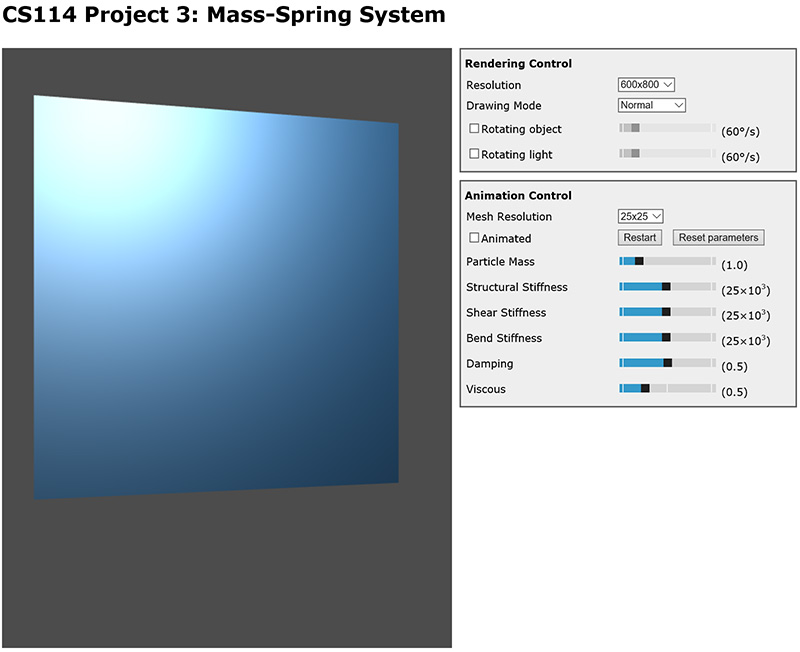
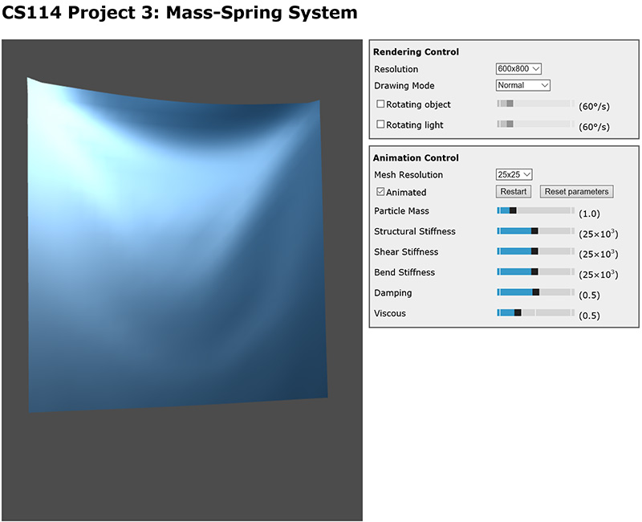

CS114 Project 3:
Cloth Simulation using Mass-Spring System
Due: Sunday May 15, 2016 (23:59pm Pacific Time)
Work individually or in groups of two.
Overview
Download the project codebase here. Please use Piazza for questions, discussions, and pairing up.
In this project, you will implement a simple cloth simulator for animating a rectangular piece of cloth.
1. Mass-Spring System
As discussed in class, we consider the cloth as a collection of particles interconnected with three types of springs:
 The rest of this section details this mass-spring system.
The rest of this section details this mass-spring system.
1.1. Particles
We assume the cloth contains $n \times n$ (evenly spaced) particles and use $[i, j]$ (where $0 \leq i, j < n$) to denote the particle located at the $i$-th row and $j$-th column. Each particle $[i, j]$ has the following states:
- Mass $m$ (we assume all particles to have identical masses).
- Position $\mathrm{x}_{i, j}(t)$.
- Velocity $\mathrm{v}_{i, j}(t)$ which equals the derivate of $\mathrm{x}_{i, j}(t)$ with respect to $t$: $\mathrm{v}_{i, j}(t) = \dot{\mathrm{x}}_{i, j}(t)$.
The position and velocity of a particle are affected by various types of forces (see Section 1.3). In particular, assuming the accumulated force acting on particle $[i, j]$ at time $t$ to be $\mathrm{F}_{i, j}(t)$, then Newton's second law of motion tells us that the acceleration of this particle at time $t$ equals $$\mathrm{a}_{i, j}(t) = \dot{\mathrm{v}}_{i,j}(t) = \ddot{\mathrm{x}}_{i,j}(t) = \frac{\mathrm{F}_{i, j}(t)}{m}.$$
1.2. Springs
There are three types of springs connecting all particles: structural, shear, and flexion (bend).
- Structural: each particle $[i, j]$ is connected to (up to) four particles via structural connections: $[i, j + 1]$, $[i, j - 1]$, $[i + 1, j]$, $[i - 1, j]$.
- Shear: each particle $[i, j]$ is connected to (up to) four particles via shear connections: $[i + 1, j + 1]$, $[i + 1, j - 1]$, $[i - 1, j - 1]$, $[i - 1, j + 1]$.
- Flexion: each particle $[i, j]$ is connected to (up to) four particles via flexion connections: $[i, j + 2]$, $[i, j - 2]$, $[i + 2, j]$, $[i - 2, j]$.
Thus, each particle can have up to 12 directly connected neighbors.
Stiffness: in this project, we assume all structural springs to have stiffness $K_0$, shear springs $K_1$, and flexion strings $K_2$.
Rest length: generally, a piece of cloth is considered to be in its rest state when there is no deformation (caused by stretching, shearing, or bending). In this project, the original shape of the cloth is a rectangle of size $4 \times 4$. It follows that the rest lengths for all structural, shear, and flexion springs are $4/(n - 1)$, $4\sqrt{2}/(n - 1)$, and $8/(n - 1)$, respectively.
1.3. Forces
There are four types of forces you will need to consider for this project:
- Spring forces: given spring connecting two particles located at $\mathrm{p}$ and $\mathrm{q}$ with stiffness $K$ and rest length $L_0$, the spring force acting on $\mathrm{p}$ equals $$ \mathrm{F}_{\text{spring}} = K(L_0 - \| \mathrm{p} - \mathrm{q} \|) \frac{\mathrm{p} - \mathrm{q}}{\| \mathrm{p} - \mathrm{q} \|}. $$ This force changes over time as the particles move.
- Gravity: each particle is affected by (simple) gravity given by $$ \mathrm{F}_{\text{gravity}} = \begin{pmatrix} 0\\ -mg\\ 0 \end{pmatrix}, $$ where $g = 9.8$. Notice that in this project, the "up" direction is the Y-axis (i.e., [0, 1, 0]), NOT the Z-axis. This force stays constant over time.
- Damping: for a particle with velocity $\mathrm{v}$, the amount of damping force it receives equals $\mathrm{F}_{\text{damp}} = -c_d\,\mathrm{v}$ where $c_d > 0$ is a constant. This force changes over time as $\mathrm{v}$ changes.
- Viscous fluid: to handle a cloth's viscous behavior, we assume each particle with velocity $\mathrm{v}$ is pushed by an imaginary viscous fluid with $$ \mathrm{F}_{\text{viscous}} = c_v [\mathrm{n} \cdot (\mathrm{u}_\text{fluid} - \mathrm{v})] \mathrm{n}, $$ where $\mathrm{n}$ is the surface normal at the particle's location, $c_v > 0$ is a constant, and $\mathrm{u}_\text{fluid}$ is a constant vector specifying the velocity of the viscous fluid. This force changes over time.
2. Animating the System
As mentioned in class, animating a mass-spring system involves solving an initial value problem. In particular, for each particle $[i, j]$ you are given its mass $m$ (which stays constant for all particles), initial position $\mathrm{x}_{i,j}(0)$ and velocity $\mathrm{v}_{i,j}(0)$. Given $\Delta t > 0$, you need to use Euler's method to compute the position and velocity of each particle at time-steps $\Delta t$, $2 \Delta t$, $3 \Delta t$, $\ldots$.
You need to pin two particles $[n - 1, 0]$ and $[n - 1, n - 1]$, which correspond to the upper left and right corners of the cloth. That is, the positions of these particles are fixed to their inital values. If no particle is pinned in place, the entire cloth will undergo a never-ending free fall because of gravity!
2.1. Codebase Overview
A WebGL based codebase similar to Project 1 has been provided. This time, the only source file you will need to touch is proj3_sim.js.
It is recommended to use Google Chrome for executing your code, although recent versions of Mozilla Firefox and Microsoft Edge should also work.
Classes
A key class that you will be using is vec3 from glMatrix version 0.9.5. Useful member functions include vec3.create(), vec3.add(), vec3.subtract(), vec3.scale(), vec3.length(), vec3.normalize(), and vec3.dot(). Check js/glMatrix-0.9.5.js to see how they work.
Reminder: several functions such as vec3.add(), vec3.subtract(), and vec3.scale() operate in place. That is, calling vec3.add(a, b) will cause the value of a changing to a + b. If you do NOT want a to be modified, create a copy of it using vec3.create(). For instance, c = vec3.add(vec3.create(a), b) will make c to have the value a + b without changing the value of a.
Global Variables
A number of global variables are used to store various mass-spring system configurations and particle states.
Constants (time-invariant):
- meshResolution stores the integer $n$ which determines the total number of particles (see Section 1.1).
- mass stores the mass $m$ for every particle.
- K is a vec3 where K[0], K[1], and K[2] indicate the stiffnesses of all structural, shear, and flexion springs, respectively.
- Similarly, restLength is a vec3 where restLength[0], restLength[1], and restLength[2] gives the rest lengths of structural, shear, and flexion springs, respectively.
- Cd stores the coefficient $c_d$ used for computing damping forces $\mathrm{F}_{\text{damp}}$.
- Cv and uf respectively store the coefficient $c_v$ and the vector $\mathrm{u}_{\text{fluid}}$ used for computing viscous forces $\mathrm{F}_{\text{viscous}}$.
All the time-invariant constants have been handled by the provided code. You can directly access them in your code.
Particle states (time-variant):
- vertexPosition and vertexVelocity are two arrays storing the position and velocity of each particle, respectively. You will need to update them in a step-by-step manner (see Section 2.2 for details).
- vertexNormal stores surface normal directions at each particle (which is needed for rendering as well as computing $\mathrm{F}_{\text{viscous}}$). You do NOT have to modify this array: the provided code automatically changes vertex normals based on the updated positions.
Global Functions
A number of getter & setter functions are provided for your convenience:
- getPosition(i, j) returns the position of particle $[i, j]$ as a vec3.
- setPosition(i, j, x) sets the position of particle $[i, j]$ to x.
- getNormal(i, j) returns the surface normal at particle $[i, j]$ as a vec3.
- getVelocity(i, j) returns the velocity of particle $[i, j]$ as a vec3.
- setVelocity(i, j, v) sets the position of particle $[i, j]$ to v.
2.2. Function to Complete
Opening proj3.html in your browser will lead to a piece of cloth that stays still:  You will need to finish the key function simulate() in proj3_sim.js to animate the cloth.
This function takes one parameter stepSize (i.e, $\Delta t$) and performs ONE iteration of Euler's method. Precisely, assuming vertexPosition and vertexVelocity currently stores the position $\mathrm{x}_{i,j}(t)$ and velocity $\mathrm{v}_{i,j}(t)$ for each particle $[i, j]$ at time $t$. After executing simulate() once, vertexPosition and vertexVelocity should be updated so that they store $\mathrm{x}_{i,j}(t + \Delta t)$ and $\mathrm{v}_{i,j}(t + \Delta t)$, respectively.
To achieve this, you will need to do the following:
- Compute the accumulated force $\mathrm{F}_{i, j}$ acting on each particle $[i, j]$ for $i, j \in \{0, 1, \ldots, n - 1\}$ based on each particle's current position and velocity.
- Update the position of each particle (except the two pinned ones) using $$\mathrm{x}_{i, j} \gets \mathrm{x}_{i, j} + \Delta t\cdot\mathrm{v}_{i, j}, $$ and then the velocity using $$\mathrm{v}_{i, j} \gets \mathrm{v}_{i, j} + \Delta t\,\frac{\mathrm{F}_{i,j}}{m}.$$
With simulate() properly implemented, we should see the cloth deforming. Here we show an example frame:  Please submit your finished proj3_sim.js.